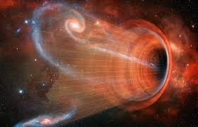

HOME
CONTACT
CHANNEL
PLAYLISTS
3 facts about black hole
- The force of gravity is so high in Black Holes that it leads to gravitational time dilation. This is a phenomenon where time slows down because of gravitational pull. Interesting fact is that time dilation can also occur when velocity increases. This is known as velocity time dilation and is generally experienced by astronauts. We will cover this in some other list. Coming back to Black Holes, time completely stops at the center of Black Holes.
- Black Holes have something known as event horizon! There is some heavy scientific explanation behind this but let us put it in simple words. Event horizon refers to a ‘point of no return’. Every Black Hole has a boundary. Any object outside that boundary is perfectly safe. But if, an object crosses the event horizon, it will have no other option but to fall into the Black Hole. Once sucked in, that object can never reappear.
- Black Holes are literally the densest objects to live in universe (at least that’s what is known to humans). So, how dense can a Black Hole get? Imagine what kind of density you will get if you try to squeeze in the entire mass of Earth in a small (we mean miniscule) sphere with a DIAMETER of 9 millimeters! That’s the type of density we are talking about.
